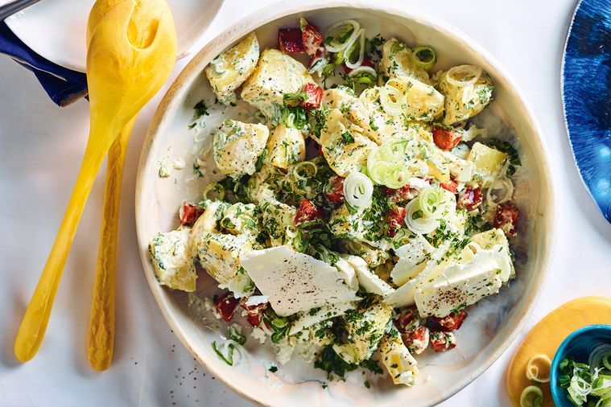

Feta,Chorizo, and Potato Salad

Description
Boiled seasoned potato blended sour cream and topped with crispy chorizo and feta cheese to make a simple, yet delicious salad.
by Phoebe Wood from delicious.
Ingredients
The following are needed ingredients for feta, chorizo and potato salad.
- 2kg medium desiree potatoes, peeled, roughly chopped into 5cm pieces
- 1/4 cup (60ml) red wine vinegar
- 1/4 cup (60ml) extra virgin olive oil
- 2 dried chorizo, roughly chopped
- 1/2 cup (150g) whole egg mayonnaise
- 2 tbs sour cream
- 3 cups chopped mixed herbs (we used dill, parsley, mint & oregano), plus extra to serve
- 1 spring onion, cut into rounds
- 1 cup (200g) feta, cut into thin slices
Method
The following steps are as follow to make feta, chorizo and potato salad.
- Place potato in a large saucepan and cover with cold salted water. Bring to the boil over high heat, then reduce heat to a simmer and cook for 25 minutes
or until tender when pierced with the tip of a knife. Drain and cool slightly, then place in a bowl and toss with 2 tbs vinegar and 1 tbs oil.
Season and set aside to cool completely.
- Meanwhile, heat remaining 2 tbs oil in a non-stick frypan over medium heat. Add chorizo and cook, stirring, for 8-10 minutes until crispy. Drain on paper towel.
- Combine mayonnaise, sour cream and herbs in a bowl with remaining 1 tbs vinegar.
Coat potatoes in mayonnaise dressing and scatter with extra herbs, spring onion, feta and chorizo to serve.
back to main page